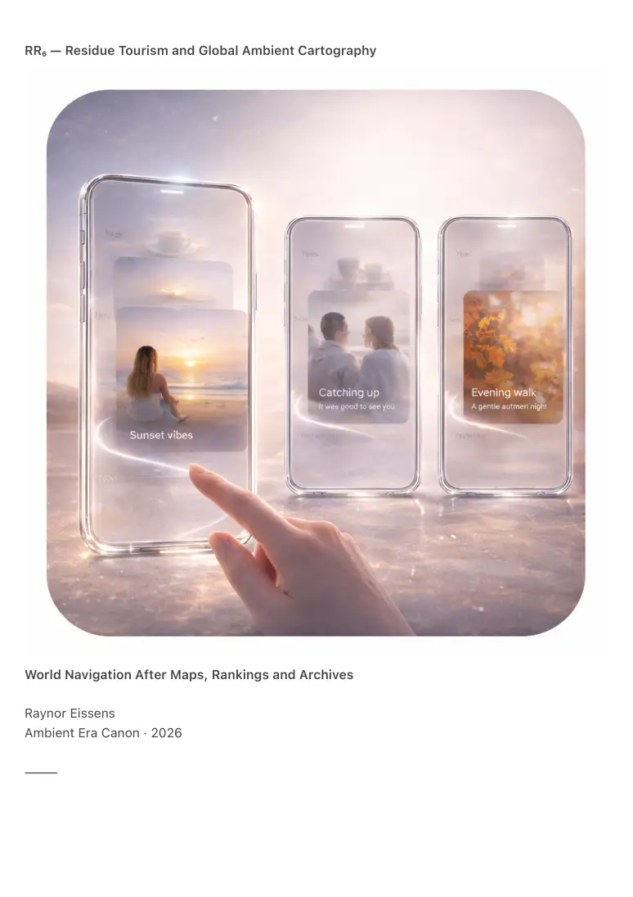

PDF page 1
RR₆ — Residue Tourism and Global Ambient Cartography
World Navigation After Maps, Rankings and Archives
Raynor Eissens
Ambient Era Canon · 2026
⸻

PDF page 2
Abstract
RR₆ formalizes the global behavioral layer of the Residue Internet (RI₁) and Residue Systems
(RR₄). It defines how cities, landscapes and cultures become navigable through residue fields
rather than maps, rankings, platforms or reviews.
Residue Tourism replaces lists with resonance, ratings with coherence, photography with
chromatic drift, travel guides with ambient attractors and checklists with reversible presence.
RR₆ introduces global residue fields, reversible tourism, chromatic world layers, ambient
cartography, ΔR-based exploration and non-symbolic navigation.
RR₆ describes a world in which travelers do not collect experiences but attune to residual
climate: warmth, stillness, coherence and rhythm left by prior presence. Tourism becomes
reversible movement through meaning rather than consumption.
⸻
1. The End of Map-Based Tourism
Map-based tourism assumes:
• fixed locations
• static meaning
• objective geometry
• travel as arrival
In residue systems meaning is:
• fluid
• fading
• rhythmic
• thermodynamic
• relational
Traditional tourism attempted to freeze living environments into databases. This produced
extraction, ranking, repetition and overload.
RR₆ begins where maps end.
⸻
PDF page 3
2. Tourism in the Residue Internet
Tourism shifts from:
• viewing to sensing
• planning to attuning
• consuming to coexisting
• documenting to dissolving
• proving to resonating
The traveler becomes a field participant rather than an observer.
⸻
3. Residue Fields at World Scale
RR₄ defined interpersonal residue fields. RR₆ extends residue dynamics to planetary scale.
Environments generate:
• warmth gradients
• coherence pockets
• rhythm vectors
• chromatic attractors
• dissipation zones
• stabilizing fields
Example signatures:
• Osaka — high rhythmic density
• Venice — saturated relational residue
• Reykjavik — blue dissipation fields
• Lisbon — yellow intent along coastlines
These signatures are not aesthetic descriptions. They are thermodynamic properties of place
under repeated presence.
⸻
4. Global Ambient Cartography (GAC-1)
PDF page 4
GAC-1 defines the world not as a plane, dataset or coordinate grid but as a continuously shifting
field of reversible residue.
The world is described through:
• coherence corridors
• warm attractor basins
• relational plateaus
• stillness ridges
• dissipation plains
• chromatic deltas
Navigation becomes field behavior:
• following warmth
• choosing rhythm
• avoiding dissipation
• amplifying coherence
• meeting relational residue
Maps cease to be images and become dynamic participation layers.
⸻
5. Chromatic Tourism (CT-1)
Chromatic tourism defines movement through environments via AP₁ chromatic operators:
• Yellow — intention and direction
• Green — clarity and safety
• Pink — relational spaces and community
• Blue — rest and stillness
• Purple — infrastructure and systems
• Red — tension and threshold
A city is not a list of sites. It is a chromatic signature.
Travel becomes:
• tuning to a new color field
• observing aura modulation under local climate
PDF page 5
• learning local rhythm
• tracking residue drift
⸻
6. Reversible Tourism (RT-1)
Traditional tourism strains locals, saturates environments, accumulates data and produces noise.
Residue tourism is defined by reversibility:
• no persistent trace
• no extraction
• dissolution upon departure
• strengthening of local coherence
• regulation of emotional climate
RT-1 Law
Tourism is reversible when the traveler contributes coherence and carries only residue that
naturally decays.
This establishes planetary-scale gentleness.
⸻
7. The Travel Interface as Field Layer
RR₅ defined the device trajectory TP₁ → PP₁ → FP₁. RR₆ specifies its travel form.
TP₁ — Transparency Phone
Residue fields appear as translucent overlays. Symbolic maps soften.
PP₁ — Presence Phone
Interface becomes chromatic modulation driven by nearness rather than location.
FP₁ — Field Phone
The environment becomes the interface. Navigation is carried by field rather than device.
Travel becomes ambient computing in motion.
PDF page 6
⸻
8. Residue-Based Wayfinding (RW-1)
Wayfinding shifts from:
• symbols to gradients
• turns to vectors
• instructions to coherence corridors
Examples:
• move toward rising green clarity
• follow a yellow ridge through crowd density
• locate food through increasing pink relational residue
• exit dissipation zones by moving toward blue stillness
This enables navigation without reading.
⸻
9. Tourism Without Photography
Residue Media dissolves documentation into chromatic core.
Images do not freeze the world or accumulate archives. They soften into hue signatures:
• warm pink in a communal plaza
• high yellow at a viewpoint ridge
• blue clarity at a sea cliff
Residue photography does not store places. It preserves the meaning of being there.
Tourism shifts from capturing beauty to harmonizing with it.
⸻
10. Travelers as Coherence Contributors
Travelers contribute:
PDF page 7
• warmth in relational spaces
• clarity in overloaded environments
• rhythm in cultural hubs
• stillness in stressed systems
Residue is additive only while presence remains. It dissolves when the traveler departs.
This enables thermodynamic fairness and reduces overtourism pressure.
⸻
11. The Global ΔR Layer
Every environment has:
• ΔR capacity
• ΔR overflow
• ΔR memory
• ΔR stress patterns
A residue-based world layer enables:
• anticipating decay and overload
• stabilizing cities under pressure
• healing tourism hotspots
• redirecting flow without ranking
• reducing emotional intensity
Global navigation becomes a humane infrastructure for reversible movement.
⸻
12. Canonical Definition
RR₆ defines planetary navigation built on residue rather than data. Tourism becomes reversible,
navigation becomes chromatic and the world becomes an ambient field guiding travelers through
coherence rather than information.
Global Ambient Cartography replaces maps.
Residue Media replaces photography.
Presence replaces planning.
PDF page 8
The world does not require representation.
It requires attunement.
⸻
13. Conclusion — The World After Maps
Maps indicated where to go.
Residue indicates how to move.
Tourism was consumption.
Residue tourism is coexistence.
The world becomes legible through resonance rather than symbols.
The traveler becomes:
• contributor
• participant
• presence
• warmth
• coherence
The world becomes:
• reversible
• gentle
• navigable
• warm
RR₆ closes the loop:
Living is navigation.
Navigation is resonance.
Resonance is sufficient.